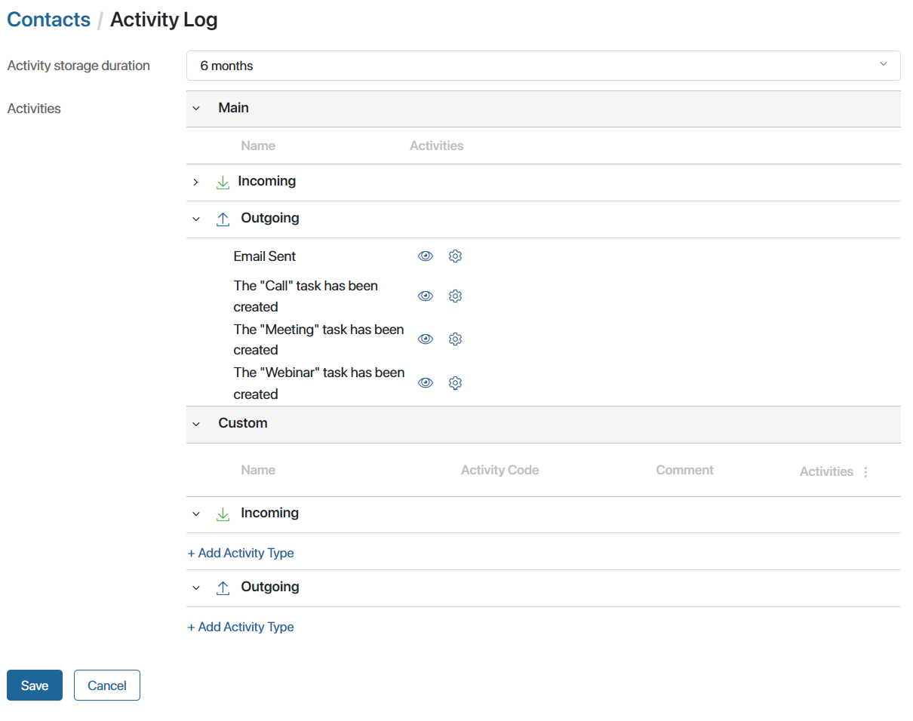
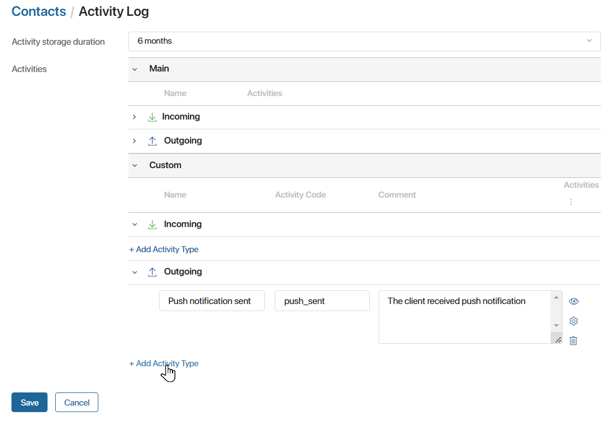
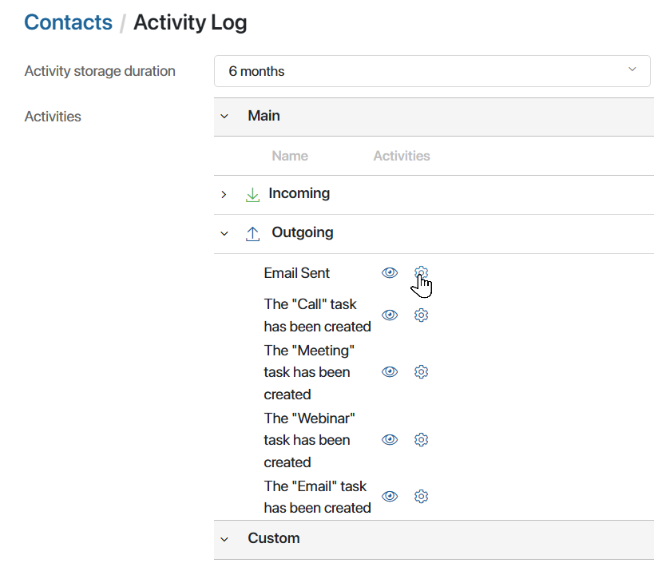
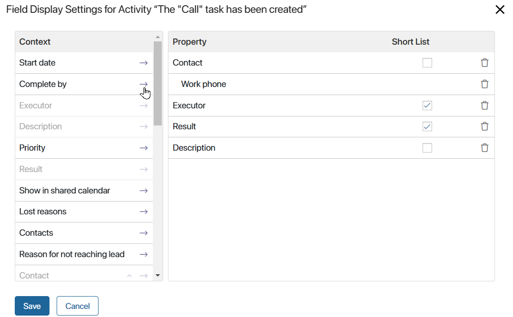

The system stores records of the interaction between the sales department and the contact. Created and executed CRM activities are recorded, as well as activities from the client’s side, for example, reactions to the sent newsletters.
You can view the records of all contacts with the client in chronological order on the contact page in the Activity log widget. Read more in Track activity log. The widget can also be added to a lead, deal or company page.
In addition, the recorded data is used to assess the client’s interest in purchase. Based on this, the contact’ nurturing stage is determined. Read more in Assign nurturing stages.
You can set up the list of displayed activities, add custom activities and set the data storage period. To do that go to the activity log settings. There are two ways to do it:
- Go to Administration > Activity Log.
- In the CRM workspace, open the Contacts app. Next to the app name, click on the gear icon and select Activity Log.
The opened page will display a list of all activities for which data is stored in the system. In the Main section, you can see the built-in activities that are created in the system by default, and in the Custom section, you can add your own types of activities.

Here you can:
- Set the period for which activity information is stored in the system and shown on item pages. The available options differ depending on the edition used:
- For SaaS, a period of six months is set.
- For On-Premises, you can store data for six months, a year, or for unlimited time.
- Add your own activity in the Custom section to track additional activities of managers and clients. To record data on an activity after its creation, you need to specify it in the custom business process in the Create Activity Entry activity. Read more in Add a custom activity.
- Hide the activity so that it is not displayed in the Activity Log widget. For example, if a certain activity is performed frequently and a lot of uninformative records are accumulated on the pages. To do this, in front of the activity, click
 .
.
The information on the hidden activity will continue to be saved and used for determining the client’s nurturing stage, but will not be displayed on the contact page.
If you have hidden a user activity, it cannot be specified in a business process when you configure the Create Activity Entry activity. The previously configured processes will continue to work without errors.
- Define which activity information is displayed in the Activity Log widget. For more information, refer to the Configure activity fields section.
- Delete a custom activity if it is no longer relevant for the company. To do this, click the trash bin icon next to the activity name.
Data on deleted activities are no longer saved in the system and are no longer considered when determining the client’s nurturing stage. The records are not displayed in the Activity Log widget. Also, after deletion, the activity is hidden from the settings.
Please note that if the deleted activity is specified in the business process in the Create Activity Entry activity, an error will occur during execution. The progress of the process is determined by the activity settings specified on the Error Handling tab.
- Restore the deleted activity, if you need to resume data collection on it. To do this, under the Activities column, click the
 icon and select Show deleted. Then click the
icon and select Show deleted. Then click the  icon next to the desired activity and confirm the action. Business processes in which the restored activity is involved will be executed without errors again.
icon next to the desired activity and confirm the action. Business processes in which the restored activity is involved will be executed without errors again.
Add a custom activity
To record client interactions that are not among the standard options, you can add custom activities. For example, in case it is important to record that a push notification or order receipt confirmation has been sent to the client.
When you export a CRM workspace, custom activities are downloaded. They can be imported to another company with system version 2024.1 or higher.
Data recording on custom activity is configured in three steps: a new activity type is added in the settings, the activity is described in the business process using various activities, and after these activities, the record creation activity is added to the process diagram.
Let’s take a closer look at how to configure data recording.
Step 1. Create an activity
- In the activity log settings in the Custom section, click +Add Activity Type. If the activity describes a client’s action, create it in the Inbox section. If it is a company’s action, create it in the Outgoing section.

- Specify the name and description. Define a unique code using English letters, numbers, and an underscore that will be used to identify the activity.
- Save the settings.
Step 2. Describe the action in the process
- Navigate to the business process in which the client interaction occurs.
- Make sure that in the context of the process, there is a variable of the App type referring to Contacts. During the process, a contact should be written in it, for which an activity record is added. For example, using the Assign Value activity or as part of a task.
- Simulate in the process the activity for which the entry is recorded. You can use any graphical elements for this purpose. For example, if you want to record sending a message about order readiness, use the Send Message activity.
Step 3: Record activity in the process
- After the activity that describes the content of the user activity, add the Create Activity Entry activity to the diagram. Within this activity, only the record of the interaction with the client is saved. When the process reaches it, the activity should have already been executed.
- In the activity settings, specify the activity type created in step 1 and the variable to which the contact is written during the process. For more information about the settings, see Create Activity Entry.
- Complete the business process modeling. Click Save and Publish in the top panel.
During the process, first, the activity actions described by other graphic elements will be performed, and then in the Create Activity Entry activity, the information will be recorded in the system.
The activity record will be displayed on the contact page and will be considered when determining the client’s nurturing stage.
Configure activity fields
You can define what information to show in the Activity Log widget for each type of activity.
For custom activities, you can only display contact fields in the widget. For main activities, the fields of the associated object are also available. This object can be:
- A CRM task.
- A deal or a lead.
- An email.
To configure the fields displayed:
- Click the gear icon next to the activity in the list.

- In the opened window, drag the fields from the Context column to the list of displayed properties.

To remove a property from the list, click the recycle bin icon next to it.
- Specify which information will always be displayed in the widget. To do this, select the checkbox in the Short List column next to the field. The other fields will be displayed only if the user opens detailed information about the activity.
- Click Save in the window.
- Save the activity log settings.
The user will see the specified fields when viewing the activity log in the widget.
Found a typo? Select it and press Ctrl+Enter to send us feedback